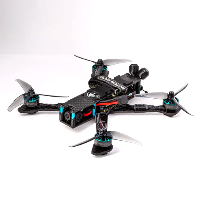
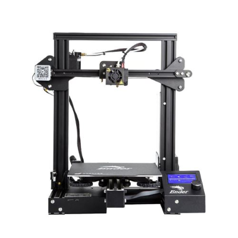
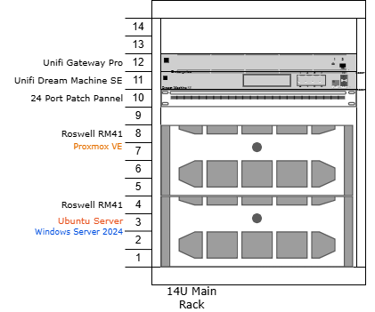

Currenrly I am a junior at Illinois Institute of Technology my focus is in Information Technology Managment (ITM). I am hoping to become a System Administrator after I graduate. This has been a really big passion of mine for several years. I started with using a old library computer to host a few game servers for me and my friends and over the years it has developed into a full-blown server rack.
This passion and hobby of mine has developed into many fun skills and knowlage. I always like finding something new to use my servers, I have had the chance to explore everything from networking to setting up and running local AI agents or using Rasbery Pi's to setup clusters.


